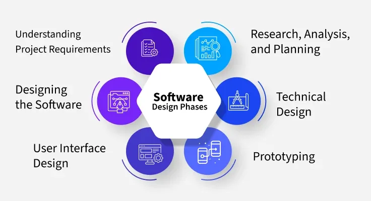

5.2 Software Design Process (Set 1 & 2)
The software design process is the structured method by which developers plan how to turn requirements into a working system. Instead of jumping straight into code, the team breaks complex requirements into manageable pieces, designs the system architecture, and decides how all components will fit together.
The design phase takes the SRS as input and produces the SDD as output. The process can be understood at two complementary levels: the three design levels (Set 1) and the design activities and deliverables (Set 2).
Set 1 — Three levels of design

1. Interface design
- Interface design specifies the interaction between a system and its environment — users, devices, and other systems (collectively called agents).
- The system is treated as a black box: internal workings are ignored; only inputs and outputs are defined.
- Interface design must document: precise description of incoming events/messages the system must respond to; outgoing events/messages the system must produce; data formats for inputs and outputs; ordering and timing relationships between incoming and outgoing events.
2. Architectural design
- Architectural design specifies the major components of a system, their responsibilities, properties, interfaces, and the relationships and interactions between them.
- The overall structure is chosen, but internal details of individual components are still ignored — modules remain black boxes.
- Key issues: gross decomposition into major components; allocation of functional responsibilities; component interfaces; scaling, performance, reliability, and resource properties; communication and interaction between components.
- At this level, designers focus on coupling and cohesion between modules rather than internal module logic (see §5.10).
3. Detailed design (low-level design)
- Detailed design specifies the internal elements of all major system components — their properties, relationships, processing, algorithms, and data structures.
- It includes: decomposition of major components into program units; allocation of functional responsibilities to units; user interfaces at module level; unit states and state changes; data and control interaction between units; data packaging, scope, and visibility; algorithms and data structures.
Set 2 — Design activities and deliverables
During the design phase, the following items are designed and documented:
- Different modules required and their responsibilities.
- Control relationships among modules (which module calls which, and under what conditions).
- Interfaces among different modules (parameters, return values, shared data).
- Data structures used within and between modules.
- Algorithms to be implemented within individual modules.

Preliminary (high-level) design
- The problem is decomposed into a set of modules; control relationships and interfaces among modules are identified.
- The outcome is called the program architecture.
- Representation techniques: structure charts and UML diagrams (see §5.7, §5.16).
Detailed design
- Each module is examined in detail to design its data structures and algorithms.
- The outcome is documented as a module specification document.
Software design phases (activity sequence)

- Understanding project requirements: The team confirms user needs, business goals, and potential challenges before designing.
- Research, analysis, and planning: Data is gathered through interviews, surveys, and focus groups to design with the user in mind.
- Designing the software: Wireframes, user stories, and flow diagrams map out system behaviour; prototypes are created and refined based on feedback.
- Technical design: A thorough technical document outlines how the software will be implemented, including specific components and their interactions.
- User interface design: UI designers work on visual elements, navigation, and overall user experience (see §5.17).
- Prototyping: Low-fidelity wireframes or high-fidelity interactive models visualise design and functionality before full development.
Elements of software design
- Architecture: The conceptual model defining structure, behaviour, and views of the system.
- Modules: Building blocks of the system — each handles a specific task or feature.
- Components: Groups of related functions, made up of modules; keep code clean and adaptable.
- Interfaces: Shared boundaries across which components exchange information.
- Data: How information is stored, accessed, and shared throughout the system.
Q: Explain the three levels of software design. What is produced at each level?
Model answer points:
- Interface design: black-box I/O specification; events, data formats, timing.
- Architectural design: major modules, responsibilities, interfaces, coupling/cohesion focus.
- Detailed design: internal algorithms, data structures, unit interactions.
- Set 2 deliverables: modules, control relationships, interfaces, data structures, algorithms.
- Preliminary design → program architecture; detailed design → module specification document.